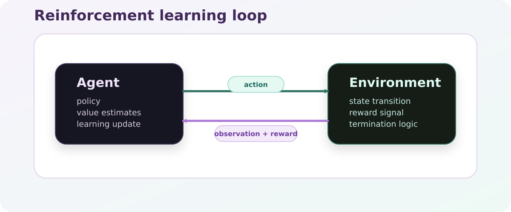
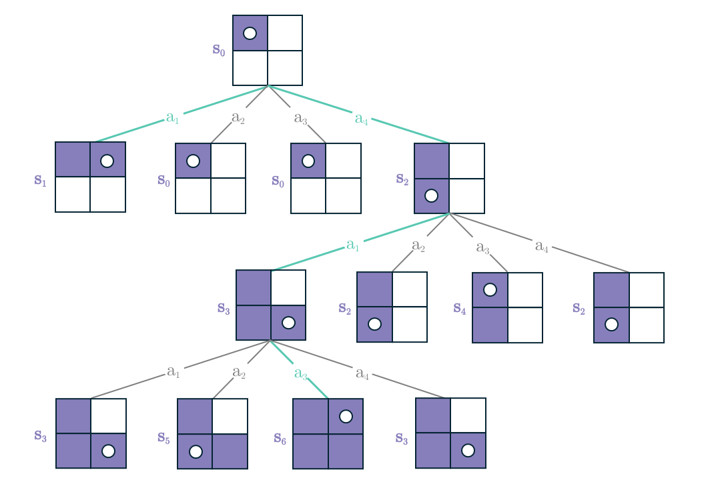

Core RL Concepts¶
Reinforcement learning studies how an agent improves its behavior by interacting with an environment and observing the consequences of its actions.
{kind=link}

The core RL loop: the agent acts, the environment responds, and learning updates the policy from experience.¶
The Core Loop¶
At every step:
the agent receives an observation
the policy chooses an action
the environment transitions to a new state
the environment emits a reward and termination signal
the collected transition is used for learning or evaluation
This produces trajectories of the form \((o_t, a_t, r_t, o_{t+1})\).
In a real runtime, the transition usually carries more than those four symbols. Practical trajectories also include episode-end flags such as terminated and truncated, plus extra info fields for metrics, diagnostics, or rollout metadata.
Key Concepts¶
Agent¶
The agent is the learner or controller. In practice, this usually means a policy network plus the training logic around it.
Environment¶
The environment defines the task. It specifies what the agent can observe, which actions are valid, how rewards are assigned, and when an episode ends.
Policy¶
The policy maps observations to actions.
deterministic policies choose one action directly
stochastic policies return a distribution over actions
Reward¶
The reward is the task signal. It encodes what the experiment wants to encourage.
Poor reward design often causes unstable or misleading behavior even if the algorithm is correct.
Return¶
The return is the accumulated future reward, often discounted:
where \(\gamma\) controls how strongly future rewards matter.
The same idea appears in value functions. For a policy \(\pi\),
This is useful because many RL algorithms can be read as ways of estimating or improving that long-term value.
Episode¶
An episode is one rollout from reset to termination or truncation. Episode length strongly affects both learning difficulty and evaluation quality.
Trajectory Metadata¶
Many scientific RL workflows need more than reward alone.
Useful trajectory metadata can include:
success flags
episode length
environment-side diagnostics
raw observations and rewards before wrapper transforms
scenario identifiers or ProcGen settings
That extra context is often what makes later evaluation, debugging, or imitation learning possible.
Common Algorithm Families¶
CTRL-P treats three families as first-class citizens.
Heuristic methods¶
Examples: zig-zag, nearest-neighbor, and other rule-based strategies.
These do not train. They are useful when you want:
a baseline that is easy to interpret
a quick sanity check for environment behavior
an expert policy to generate demonstration data
Value-based methods¶
Examples: DQN and related methods.
These learn action values and usually work best in discrete action spaces.
Policy-gradient methods¶
Examples: PPO and A2C.
These optimize the policy more directly and are widely used for continuous-control and simulator-heavy tasks.
Offline and imitation methods¶
Examples: behavior cloning and dataset-driven pretraining.
These learn from saved trajectories instead of or before online interaction.
In CTRL-P, this is not just a side topic. Offline workflows connect directly to the rollout and pretrain tasks, and behavior cloning can be trained on datasets produced by heuristics or learned policies.
{kind=link}

State-action tree illustration from the project figure deck. It works well as intuition for how discrete RL rollouts branch through actions and successor states.¶
Why This Matters For CTRL-P¶
CTRL-P supports:
heuristics for fast baselines and demonstrations
reinforcement learning for online policy improvement
imitation learning for dataset-driven training
shared evaluation and demo entry points across those methods
That is why the framework separates environment definition, algorithm selection, runtime modes, and artifact storage instead of collapsing everything into one opaque training script.
Advanced Topics In CTRL-P¶
Behavior Cloning From Rollouts¶
A common workflow in CTRL-P is:
run a heuristic or trained policy with
rolloutstore the resulting dataset
preprocess it with
pretrainwhen neededtrain a behavior-cloning policy on that dataset
This is useful when:
online training is expensive
you want to compare imitation against RL
you want to turn a strong heuristic into a trainable baseline
ProcGen As Controlled Scenario Variation¶
For built-in environments, ProcGen is part of the learning problem definition, not just a file-generation detail.
It controls which masks, loads, or scenario inputs the agent sees. That means ProcGen affects:
what the policy is trained on
how reproducible the task distribution is
whether train, val, and test scenarios are meaningfully separated
For students, the key idea is simple: changing ProcGen can change the problem itself, not only the data volume.